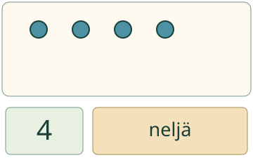
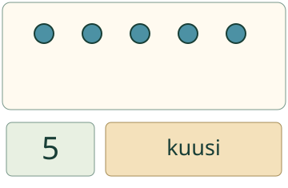

Aava tekee merkkirasiaan laput. Määrän, numeron ja sanan pitää sopia yhteen.
Kolme tapaa, sama määrä
Yhdistän määrän, numeron ja sanan. Kuvassa on neljä merkkiä. Niihin sopivat numero 4 ja sana neljä.

Voit aloittaa myös numerosta. Numerolle 6 kokoat kuusi merkkiä ja valitset sanan kuusi.
Ilman moduulia: kokoa neljä merkkiä. Liitä numerolappu 4 ja sanalappu neljä. Kokeile sitten numerolla 6.
Yksi väärä lappu riittää

Tässä määrä ja numero sopivat. Sana kuusi ei sovi viiteen merkkiin. Vaihda sanaksi viisi.
Ennusta: pitääkö laput vaihtaa, jos siirrät samat merkit kauemmas toisistaan?
Katso ajatus
Ei. Merkkejä ei tullut lisää eikä lähtenyt pois. Määrä pysyy samana, vaikka rivi leviää.
Sama ajatus pöydän kattamisessa
Pöydälle tarvitaan 7 mukia. Kokoa seitsemän merkkiä mukien paikalle ja liitä sana seitsemän. Numero, sana ja koottu määrä tarkoittavat samaa.
Apua
Voit hahmottaa määrän tai laskea sen. Laskuapu näyttää luvut merkkien päällä laskemisen tueksi. Sitä ei tarvitse käyttää. Numerosta aloittaessa lisää tai poista merkkejä, kunnes määrä sopii numerolappuun. Tarkista sitten koko kortti.
Aikuinen saa lukea sanalaput. Ääneen vastaamista tai merkkien nimeämistä ei tarvita.
Tutki lisää ilman ruutua
Tee paperille numero- ja sanalappuja. Valitse numerolappu ja kokoa määrä esimerkiksi napeista. Vaihda sitten napit palikoiksi ja siirrä ne uuteen järjestykseen. Mitkä laput sopivat yhä?
Opettajalle: yhdistäminen ja rajat
Vuosiluokat 1–2, kanoninen integration-rooli. Vaadittu JA-ryhmä on M-NUM-QTY-WORD, M-NUM-QTY-NUMERAL ja M-NUM-WORD-NUMERAL. Niiden atomisia hallintatiloja ei myönnetä tai korvata tällä sivulla. Täysi kanoninen integraation hallinta edellyttää erillistä soveltamisnäyttöä; tämän tuetun harjoituksen onnistuminen ei yksin täytä sitä.
Kuvasta aloittaessa tarkistetaan sekä numero että sana samaa määrää vasten. Numerosta aloittaessa oppija kokoaa määrän ja liittää sanan. Kaikki pätevät saman lukumäärän merkkivalinnat ja järjestykset hyväksytään. Pelkkä yhden parin oikeellisuus ei tuota koko kortin hyväksyntää. Lukualue on 1–10. Tyhjä koottu joukko voi olla välivaihe, mutta se ei täytä positiivista tavoitetta.
Asettelu ja vapaaehtoiset apunumerot eivät muuta määrää; kelvollinen palaute säilyy. Numeron, sanan tai koottavan määrän muutos palauttaa tarkistuksen neutraaliksi. Tarkistus lukee näkyvät kentät. Kuvausten lukumäärät ja aikuinen voivat antaa tukea; tästä ei päätellä itsenäistä laskemista, lukutaitoa tai numeron kirjoittamista. Ei henkilöhistoriaa, formaalia hallintaa, säilyvyyden tai oppimisvaikutuksen väitettä. Täyttä ei-visuaalista saavutettavuusarviota ei ole tehty.
Lopuksi: mitä kaikkia kolmea vertaat, kun tarkistat kortin?
 Aava tekee merkkirasiaan laput. Määrän, numeron ja sanan pitää sopia yhteen.
Aava tekee merkkirasiaan laput. Määrän, numeron ja sanan pitää sopia yhteen.